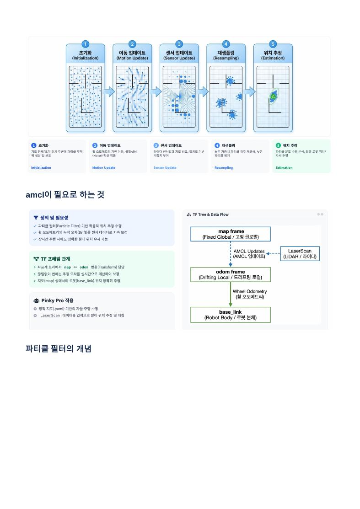
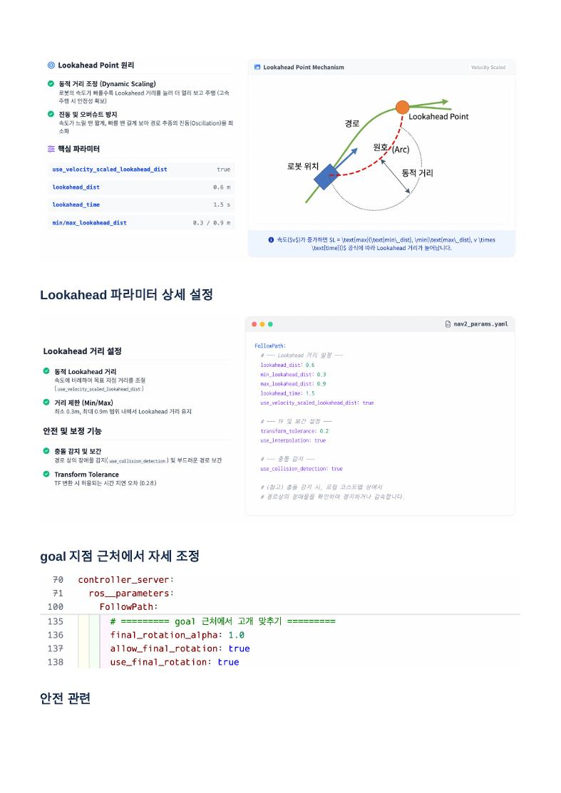
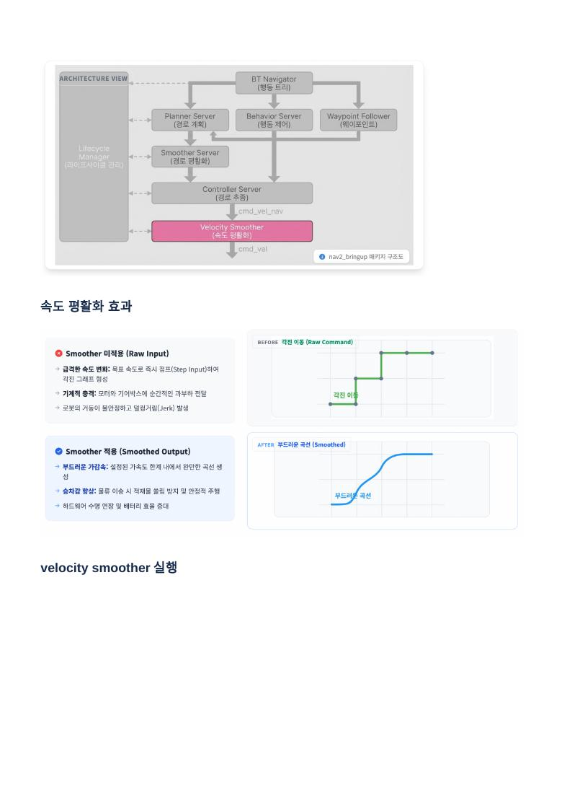
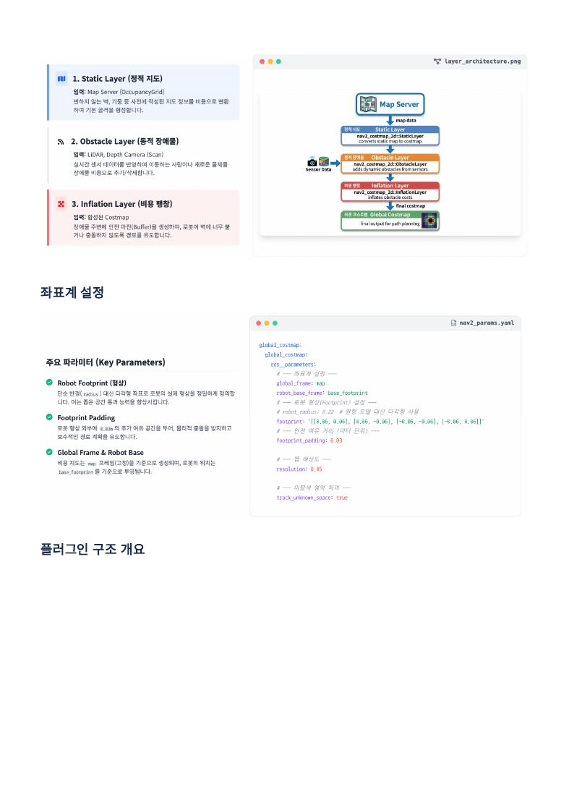
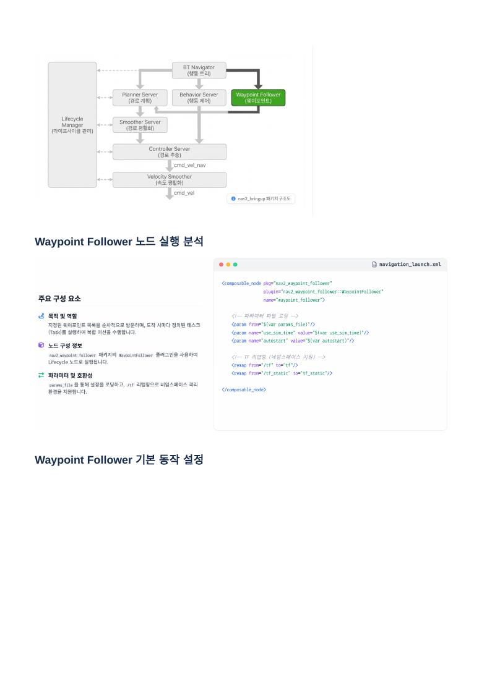

launch.xml은 어떤 노드를 어떤 범위에서 실행할지 정하고, nav2_params.yaml은 그 노드와 플러그인이 어떻게 행동할지 정합니다.Nav2 전체 구조를 먼저 잡기
위치 추정 → 계획 → 추종 → 명령
Map Server + AMCL ─────────────→ 현재 위치(map → odom)
↓
목표 Pose → BT Navigator → Planner Server → Global Plan
↓ ↓
Behavior Server Smoother Server
↓ ↓
└──────→ Controller Server
↓ cmd_vel_nav
Velocity Smoother
↓ cmd_vel
로봇- Localization: Map Server와 AMCL이 저장 지도 안의 현재 자세를 제공합니다.
- Planner: 목표까지의 전체 경로를 만듭니다.
- Controller: 경로를 따라갈 선속도·각속도를 계산합니다.
- Velocity Smoother: 급격한 속도 명령을 가속도 제한 안에서 부드럽게 바꿉니다.
- BT Navigator: 계획, 추종, 재계획, 복구의 전체 순서를 지휘합니다.
Launch·YAML·Plugin의 역할 차이
설정 파일을 읽는 기본 원리
Launch XML
실행할 노드, namespace, remap, parameter 파일, composition 여부, lifecycle autostart를 연결합니다.
nav2_params.yaml
각 노드의 주기·frame·허용 오차와 로드할 planner/controller/layer plugin의 세부값을 정의합니다.
navigation_launch.xml
└─ ControllerServer 실행
└─ nav2_params.yaml 로드
└─ FollowPath plugin = RPP
└─ lookahead_dist, desired_linear_vel...YAML에서 들여쓰기는 소속을 뜻합니다. 같은 inflation_radius라도 global_costmap 아래인지 local_costmap 아래인지에 따라 적용 대상이 다릅니다. 파라미터 이름이 맞아도 잘못된 namespace에 두면 사용되지 않을 수 있습니다.
Plugin이란?
Nav2 서버는 기능의 공통 인터페이스를 제공하고 실제 알고리즘은 plugin으로 교체합니다. Planner Server에 NavFn 또는 Smac을, Controller Server에 RPP 또는 DWB를 넣는 식입니다. 그래서 서버와 알고리즘 이름을 구분해야 합니다.
Composable Node와 Component Container
여러 노드를 한 프로세스에 적재
- 일반 노드: 노드마다 별도 프로세스로 실행되어 장애 격리가 쉽지만 프로세스 간 통신 비용이 있습니다.
- Composable Node: 여러 ROS 2 component를 하나의 container 프로세스에 로드해 통신 복사와 실행 부담을 줄입니다.
- ComponentContainer: component들이 같은 executor를 공유합니다.
- ComponentContainerIsolated: component별 callback 실행을 더 격리해 한 component의 긴 callback이 다른 노드에 주는 영향을 줄입니다.
Composition은 노드를 하나로 합치는 것이 아니라, 각 노드의 이름·토픽·파라미터를 유지하면서 같은 프로세스 안에 배치하는 실행 방식입니다.
Group과 Namespace
<group>은 실행 파일 자체가 아니라 namespace, remap, parameter 같은 설정이 적용되는 범위를 묶습니다. Namespace를 쓰면 여러 로봇이 동일한 scan, cmd_vel 이름을 가져도 /robot1/scan처럼 충돌을 피할 수 있습니다.
Lifecycle Manager가 필요한 이유
의존 순서대로 configure·activate
unconfigured → inactive → active
↑ configure ↑ activate
오류·종료 시: active → inactive → unconfigured → finalizedMap Server가 준비되기 전에 AMCL이 동작하거나 Planner가 costmap 없이 목표를 받으면 실패합니다. Lifecycle Manager는 등록된 노드를 의존 순서대로 활성화하고 상태를 감시합니다. autostart:=true는 bringup 후 자동으로 active까지 전환하라는 의미입니다.
- 프로세스가 실행 중이어도 lifecycle이 inactive면 서비스와 액션을 정상 처리하지 않을 수 있습니다.
- Localization과 Navigation은 서로 다른 lifecycle manager와 node 목록을 가질 수 있습니다.
- RViz Navigation 패널의 active 표시는 이 상태 전환 결과입니다.
bringup_launch.xml의 역할
상위 실행 조립 파일
map,use_sim_time,params_file,autostart,namespace같은 argument를 받습니다.- 필요하면 component container를 만들고 localization과 navigation launch를 포함합니다.
- namespace group 안에서 토픽·TF remap과 파라미터 치환을 적용합니다.
- 저장 지도 위치 추정과 Nav2 주행 서버를 한 명령으로 시작하게 합니다.
bringup_launch.xml
├─ localization_launch.xml
│ ├─ map_server
│ ├─ amcl
│ └─ lifecycle_manager_localization
└─ navigation_launch.xml
├─ controller / planner / smoother
├─ waypoint / behavior / bt_navigator
└─ lifecycle_manager_navigationlocalization_launch.xml
Map Server + AMCL + Lifecycle
- Map Server: YAML과 PGM을 읽어
/map을 제공합니다. - AMCL: 지도, LaserScan, odometry로
map → odomTF를 추정합니다. - Lifecycle Manager: 두 노드를 configure하고 active로 전환합니다.
- Composable 실행:
use_composition설정에 따라 container 안 또는 별도 프로세스로 실행할 수 있습니다.
Map Server는 로봇 위치를 찾지 않고 지도만 제공합니다. 위치 추정과 TF 보정은 AMCL의 역할입니다.
AMCL 파티클 필터와 설정 범주
예측 → 센서 비교 → 재샘플링 → 추정

- Motion model: odometry 이동에 따라 파티클을 이동시키며 alpha 값이 이동 불확실성을 표현합니다.
- Frame:
global_frame_id=map,odom_frame_id=odom,base_frame_id=base_footprint관계가 맞아야 합니다. - Sensor model:
scan_topic, beam 수, 최대 거리, likelihood 모델이 지도와 Scan의 일치도를 계산합니다. - Particle 수: 많으면 다양한 후보를 유지하지만 CPU 사용량이 증가합니다.
- Update 조건: 로봇이 일정 거리 또는 각도 이상 움직였을 때 센서 업데이트·재샘플링합니다.
증상별 확인
- 파티클이 너무 넓게 퍼진 채 모이지 않으면 initial pose, TF, scan 정렬과 센서 모델을 먼저 확인합니다.
- 움직인 뒤 추정이 늦게 따라오면 update_min_d·update_min_a가 너무 큰지 확인합니다.
- 순간적으로 잘못된 위치로 점프하면 파티클 수, odometry 오차, laser 모델과 resampling 설정을 확인합니다.
Controller Server와 Regulated Pure Pursuit
Global Plan을 실제 속도로 변환
controller_frequency는 새cmd_vel을 계산하는 주기입니다.progress_checker는 일정 시간 동안 최소 거리 이상 움직였는지 확인해 막힘을 판단합니다.goal_checker는 목표 위치·방향 허용 오차 안에 들어왔는지 판단합니다.FollowPath아래에서 RPP plugin과 파라미터를 설정합니다.

중요 RPP 파라미터
- desired_linear_vel: 기본 목표 선속도입니다.
- lookahead_dist: 앞쪽 기준점까지 거리입니다. 크면 부드럽지만 코너를 크게 돌고, 작으면 정밀하지만 흔들릴 수 있습니다.
- use_velocity_scaled_lookahead_dist: 속도에 따라 lookahead를 동적으로 바꿉니다.
- min/max_lookahead_dist: 동적 lookahead의 최소·최대 범위입니다.
- rotate_to_heading: 경로 방향 차이가 크면 전진 전에 제자리 회전을 수행합니다.
- use_collision_detection: 예상 궤적의 충돌을 검사합니다.
- transform_tolerance: TF 데이터가 약간 늦는 것을 허용하는 시간입니다. 너무 크게 잡으면 오래된 자세를 허용합니다.
Local Costmap의 좌표계와 레이어
로봇 주변의 최신 충돌 정보
- global_frame: 보통 연속적인 지역 움직임을 위해
odom을 사용합니다. - robot_base_frame: 이 프로젝트에서는
base_footprint가 실제 TF와 맞습니다. - rolling_window: 로봇을 따라 움직이는 일정 크기의 지역 지도를 만듭니다.
- Obstacle Layer: LaserScan에서 새 장애물을 표시하고 지나간 공간을 clearing합니다.
- Inflation Layer: 장애물 주변에 비용을 퍼뜨려 차체와 안전거리를 확보합니다.
- Static Layer: 필요한 경우 정적 지도 정보를 합칩니다.
Footprint는 실제 충돌 외곽선이고 inflation은 그 바깥의 경로 선호 비용입니다. 좁은 통로를 통과시키기 위해 footprint를 실제보다 줄이는 것은 안전하지 않습니다.
Velocity Smoother는 속도 명령의 계단을 곡선으로 바꾼다
cmd_vel_nav → 제한 적용 → cmd_vel

- max/min_velocity: 축별 속도 상한과 하한입니다.
- max_accel: 얼마나 빨리 속도를 높일 수 있는지 정합니다.
- max_decel: 감속 한계이며 보통 음수로 표현합니다.
- smoothing_frequency: 부드러운 속도를 새로 계산해 발행하는 주기입니다.
- feedback: OPEN_LOOP는 이전 명령을, CLOSED_LOOP는 odometry 실제 속도를 기준으로 합니다.
- velocity_timeout: 입력 명령이 끊겼을 때 0 속도를 보내는 대기 시간입니다.
- deadband_velocity: 이보다 작은 명령을 0으로 처리해 모터 떨림을 줄입니다.
가속도 제한이 너무 낮으면 반응이 둔하고 목표 도달이 늦어집니다. 너무 높으면 smoother 효과가 줄어 급출발·급정지가 나타납니다.
Planner Server·NavFn·Global Costmap
전체 지도에서 목표까지 길 찾기
expected_planner_frequency는 계획 성능 감시 기준이며 실제 재계획 시점은 BT 요청 흐름의 영향도 받습니다.use_astar=false이면 NavFn은 Dijkstra,true이면 A*를 사용합니다.- Dijkstra는 시작점에서 비용이 낮은 영역을 넓게 탐색하고, A*는 목표까지 예상 비용을 더해 목표 방향을 우선 탐색합니다.
allow_unknown은 알려지지 않은 공간을 경로 후보로 허용할지 결정합니다.tolerance는 정확한 목표 칸이 막혔을 때 주변에서 허용할 목표 거리를 정합니다.

Global Costmap은 보통 map frame을 쓰며 Static·Obstacle·Inflation Layer를 순서대로 결합합니다. 경로가 아예 생성되지 않으면 planner 알고리즘보다 먼저 목표 셀, footprint, inflation으로 통로가 막혔는지 확인합니다.
나머지 서버도 역할이 다르다
Smoother·Waypoint·Behavior·BT
- Smoother Server: 격자 탐색으로 꺾인 Global Plan을 더 부드러운 경로로 다듬습니다. Velocity Smoother와 이름은 비슷하지만 경로와 속도로 대상이 다릅니다.
- Waypoint Follower: 여러 Pose를 순서대로 방문하고 각 지점에서 task executor plugin을 실행합니다.
- WaitAtWaypoint: waypoint 도착 후 지정 시간만큼 기다리는 task plugin입니다.
- Behavior Server: Spin, BackUp, DriveOnHeading, Wait 같은 복구·보조 행동을 제공합니다.
- BT Navigator: Planner·Controller·Behavior 액션을 Behavior Tree 순서로 호출하는 최상위 orchestrator입니다.

Nav2 설정을 바꾸는 안전한 순서
한 계층씩 원인을 분리
- TF·센서:
map → odom → base_footprint와 LaserScan 정렬을 먼저 확인합니다. - AMCL: 파티클이 실제 위치에 수렴하고 이동을 따라오는지 확인합니다.
- Footprint·Costmap: 실제 로봇 크기와 장애물 표시·clearing·inflation을 맞춥니다.
- Planner: 목표까지 Global Plan이 생성되는지 확인합니다.
- Controller: lookahead, 회전 우선, 목표 허용 오차로 경로 추종을 조정합니다.
- Velocity Smoother: 마지막에 속도·가속도·deadband를 실제 구동 특성에 맞춥니다.
- BT·Recovery: 정상 주행이 된 뒤 실패 판단 시간과 복구 행동을 조정합니다.
증상 → 먼저 볼 설정
- 위치가 점프함: AMCL, odometry, TF, LaserScan
- Global Plan이 없음: Global Costmap, 목표 셀, footprint, inflation, planner
- 경로는 있는데 멈춤: Local Costmap, progress checker, controller collision 검사
- 코너에서 크게 벗어남: RPP lookahead를 줄이거나 속도 기반 범위를 조정
- 좌우로 흔들림: lookahead가 너무 작거나 속도가 높고 위치 추정이 흔들리는지 확인
- 급출발·급정지: Velocity Smoother의 accel/decel 제한
- 목표 앞에서 끝나지 않음: goal checker의 xy·yaw tolerance와 final rotation 설정
한 번에 여러 YAML 값을 바꾸지 말고 변경 전 값을 기록한 뒤 같은 시작점·목표로 비교합니다. RQt로 바꾼 동적 값은 재실행 후 사라질 수 있으므로 최종값은 YAML에 반영해야 합니다.
핵심 실행 명령
앞 터미널을 종료하지 않고 순서대로 실행합니다.
# 터미널 1 — Gazebo
pk_gz
# 터미널 2 — Nav2 Bringup
pk_nav
# 터미널 3 — RViz2
pk_rviz
# 상태 확인용 별도 터미널
source /opt/ros/jazzy/setup.bash
source ~/pinky/install/setup.bash
ros2 lifecycle nodes
ros2 action list
ros2 topic echo /cmd_vel
ros2 run tf2_ros tf2_echo map base_footprint실습 체크리스트
- RViz Navigation·Localization이 active인지 확인합니다.
- 2D Pose Estimate로 지도와 LaserScan을 맞춥니다.
- Nav2 Goal을 지정해 Global Plan 생성 여부를 봅니다.
- Local/Global Costmap의 장애물·inflation 표시를 구분합니다.
- 주행 중 controller 출력과 Velocity Smoother 이후
/cmd_vel을 관찰합니다. - 실패하면 TF → AMCL → Costmap → Planner → Controller 순서로 확인합니다.